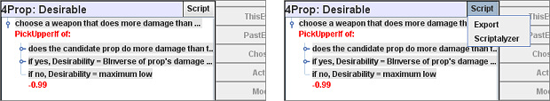
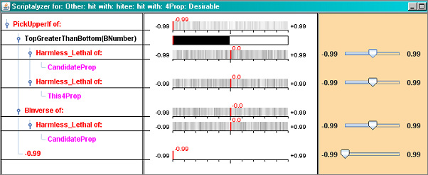
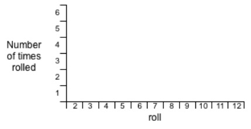
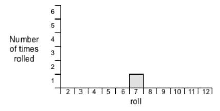
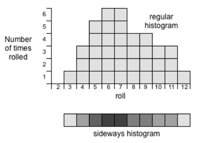

SWAT provides you with a great many tools for analyzing your storyworld and figuring out what's going on inside. One of these is Scriptalyzer. You use this tool to figure out how a Script works.
To try it out, bring up the Script for hit with: hittee: hit with: 4Prop: Desirable. T'hen click on the button in the upper right corner of the Scripting box that is labeled "Script."

You'll see a popup menu with just two menu items: "Export" and "Scriptalyzer." The Export choice is very simple: it saves an HTML file showing the Script. This is handy for printing out Scripts, or perhaps sending a Script to a friend. The Script can't be imported back into SWAT, but it can at least be read easily.
Be sure to read it in an HTML display application such as a browser, not a text editor.
But the important menu item here is "Scriptalyzer." Select that menu item and you'll see a big new window appear:

Here's what it means:
The left column shows the Script that is being analyzed. It's not interactive—it's just for reference purposes (actually, you can click on the tiny iconettes to open and close Operators, but it won't mean anything because it doesn't affect the rest of the window). The central column shows the results of the Scriptalyzer process. Those results are pretty complicated, so here goes:
The red marks show what happens when you change the slider settings in the right hand column. Change the first slider, which represents
Harmless_Lethal of CandidateProp, and watch how the red marks move around in response. Notice what happens to the PickerUpperIf value as you change the Harmless_Lethal of CandidateProp. You get two different numbers, depending on whether the Harmless_Lethal of CandidateProp is greater or smaller than the Harmless_Lethal of This4Prop. That's the comparison the Script is making, and here you see it in action.
If you ever want to get a feeling for how a particular Operator works, this is an excellent place to play. The slider settings you make do not affect anything in the storyworld; they just show an analysis of the current script's effects. You can play with them as much as you want without altering your storyworld.
The gray imagery is harder to understand. Think of it as a "sideways light gray glass histogram."
Great. What's a histogram?
Here's a simple example of how you build a histogram. Suppose that you have a pair of dice and you roll them and note what you get. Suppose it's a 7. Instead of writing down "7," you lay out a horizontal graph like so:

and then you plunk down one square to mark the 7 that you rolled, like so:

Now do it again; say you get a 5. So put a square in the "5" space. And now repeat this experiment a bunch of times, putting down more squares, and squares on top of squares if necessary. Eventually you end up with something like this:

Now, suppose that each of those squares was really a glass cube made with light gray glass. If you were to put a light underneath the histogram and stand over it; you'd see something like the sideways histogram. Where there are a lot of cubes, you see less light (dark color). Where there are a few cubes, you see more light (lighter color).
That's what Scriptalyzer does. Those gray smears in the middle column show how the results of a thousand experiments came out.
When Scriptalyzer first opens up for a Script, it goes to each of the sliders and randomly picks a setting for that slider. The red marks all move around in response to the new settings. Scriptalyzer makes a note of where every red mark ended up, then starts over, changing the settings of all the sliders to new positions. Again, it notes where the red marks end up. Then it does this 998 more times, ending up with a big pile of data for where all the red marks ended up in all those 1,000 experiments. Then it builds a histogram out of the results.
An area that's black means that a lot of the experiments put their red marks in that area. An area that's white means that very few experiments put their red marks in that area. So you can read the glass histogram to get a quick idea of how the Script tends to come out on average.
Scriptalyzer is a very handy tool for understanding both Operators and Scripts. You can learn a lot about the individual Operators by simply playing with Scriptalyzer. You can also figure out how well your Scripts work using Scriptalyzer. If a Script is always yielding a result that's too high, say, then you can go into Scriptalyzer and wiggle around all the sliders, and pretty soon you'll see that only a few of the sliders really matter. Those are the ones that are biasing your results.